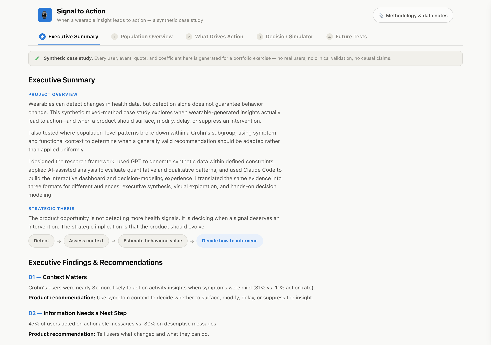
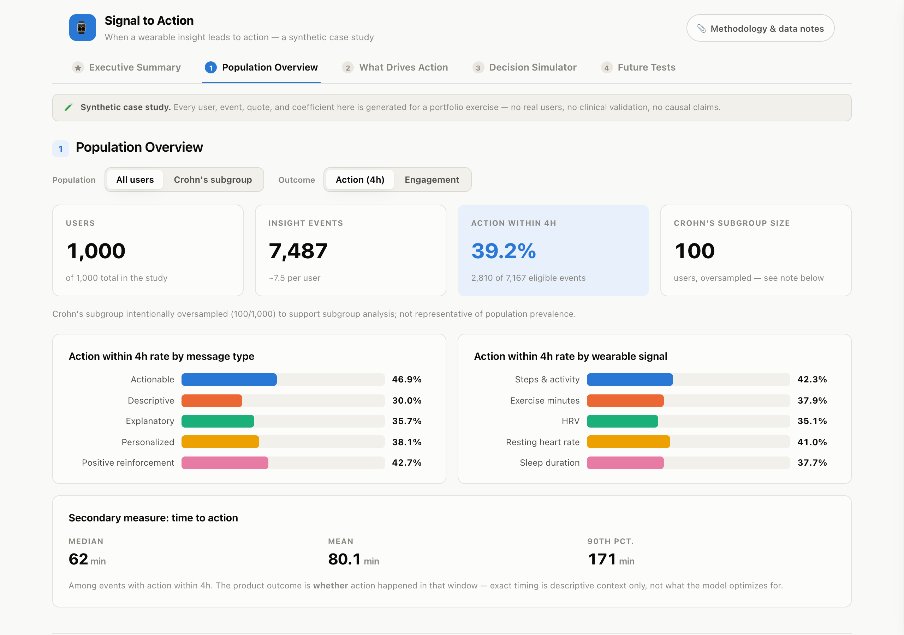
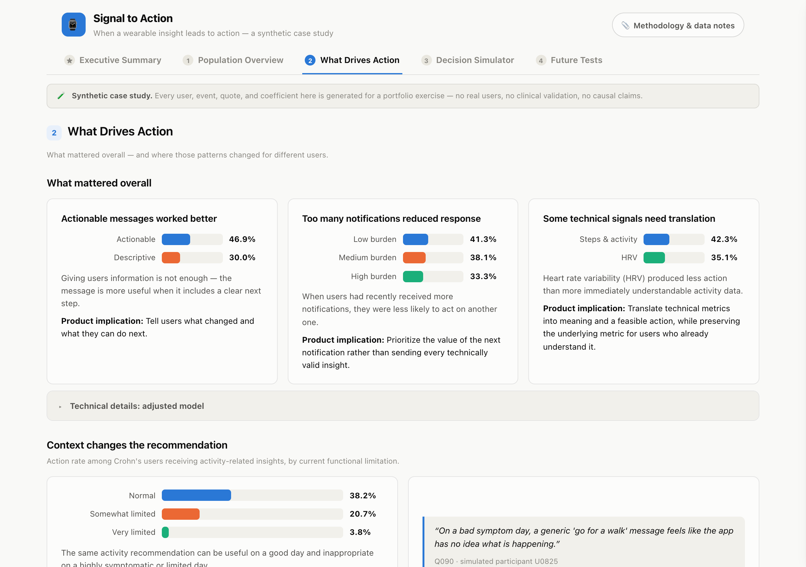
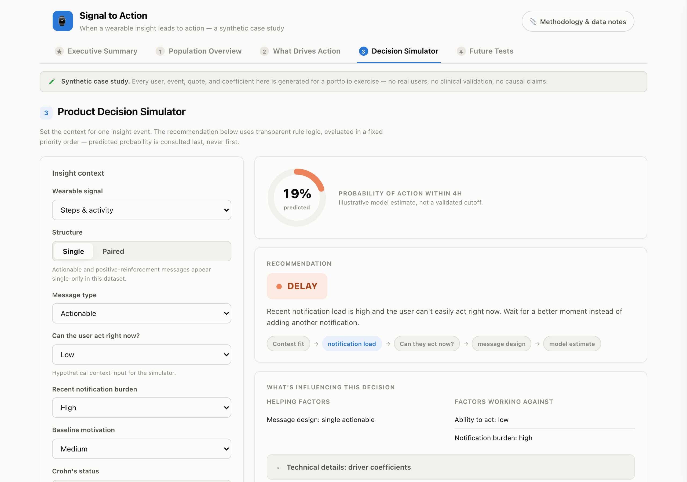

Signal to Action
A synthetic mixed-method case study exploring when wearable-generated insights lead to action—and when a product should surface, modify, delay, or suppress an intervention.

Overview
Wearables can already tell someone their heart rate variability dropped or their activity is down for the day. What they're bad at is judging whether that specific insight, for that specific person, at that specific moment, is worth interrupting them for.
I framed this as a decision problem, not a detection problem: when do wearable-generated insights lead to meaningful action, and when should a product change the message, change the timing, or choose not to intervene?
I designed a synthetic research dataset to test it, ran the analysis with AI assistance, and built an interactive dashboard and decision simulator in Claude Code to carry the evidence from raw data to a product recommendation.
1,000
synthetic users, 7,487 insight events
100
users oversampled into a Crohn's subgroup for subgroup analysis
125
simulated qualitative excerpts coded against an 8-code framework
0.73
held-out AUC on a user-level train/test split
01 - Framing the problem
Most wearable products treat detection as the hard part. Once a signal moves, notify the user and count it as a win. That framing misses the actual product risk: a technically accurate insight sent at the wrong moment, in the wrong framing, or to someone whose current context makes it useless, doesn't build trust. It erodes it.
I set the primary outcome as action taken within four hours of an insight, exact time-to-action preserved only as a secondary measure, and asked which factors actually moved that number after adjustment: ability to act, message framing, recent notification burden, wearable signal, and current health context.
02 - Data and analysis
I designed the synthetic dataset and used GPT to generate it within predefined constraints: 1,000 users, roughly 7.5 insight events each, and a 100-user Crohn's subgroup intentionally oversampled so a small population would carry real subgroup signal. I ran an adjusted logistic regression with user-clustered standard errors, held out a user-level test split, and paired it with 125 simulated qualitative excerpts coded against a predefined 8-code framework.
After adjustment, three patterns held up:
Actionable messages worked better
47% of users acted on messages with a concrete next step, versus 30% on descriptive messages alone.
Notification load mattered
Action rate dropped from 41% at low recent notification burden to 33% at high burden.
Context beat diagnosis label
Crohn's status alone wasn't predictive. Current functional limitation was: action rate fell from 38% to 4% as activity capacity dropped.
The harder, more useful part was deciding what to do with results that were technically valid but not strong enough to act on. I removed findings that were statistically valid but difficult to defend or explain, rejected a notification-volume result too weak to carry an executive recommendation, replaced a more dramatic trust statistic with a cleaner and more transparent comparison, and revised the message-design analysis once I realized “paired” messages were confounded with actionable content, so the dashboard never claims pairing alone drives action.
I used AI to accelerate the work, not to make these calls for me: synthetic data generation, the statistical and qualitative analysis passes, and exploring alternative interpretations were all AI-assisted. Framing the research question, designing the subgroup strategy, choosing which sensitivity checks mattered, and deciding which findings were strong enough to put in front of a stakeholder were mine.
03 - Translating evidence for different audiences
The same evidence doesn't work the same way for every reader. A VP needs the decision, not the regression table. A researcher wants to see the pattern break down by subgroup and inspect the coefficients behind it. A product team wants to act on it. I built three ways into the same evidence instead of one dashboard trying to serve all three.
Executive Summary
Understand the decision: findings, implications, and recommendations in one page, no regression table required.
Visual Dashboard
Explore the evidence: interactive charts for population patterns, subgroup differences, and mixed-method findings, with the full statistical detail one click away.
Decision Simulator
Apply the evidence: change a user's context and watch the recommended product action, surface, modify, delay, or suppress, change with it.


04 - What I built
The dashboard is a single self-contained page, no framework, built in Claude Code: five views, native expandable panels for the full regression output and sensitivity checks, light and dark themes, and a layout that holds up from a phone to a wide monitor. Nothing about the interactivity, the Population Overview controls, the technical-detail panels, or the simulator, is a screenshot standing in for the real thing.
The Decision Simulator is the sharpest translation of the research into product terms. Set a wearable signal, a message design, a user's current ability to act, recent notification burden, and (if relevant) today's symptom context, and the tool returns a recommendation, surface, modify, delay, or suppress, using transparent rule logic evaluated in a fixed priority order: context fit, then notification load, then whether the user can act right now, then message design, and only last, a model-estimated probability. The predicted probability never decides the recommendation on its own.
Every recommendation comes with the actual notification a user would see, or, for delay and suppress, a plain explanation of why nothing is sent instead. Crohn's status shifts tone and routing behind the scenes; it never appears in the message copy itself.
Launch the interactive dashboard
05 - Product judgment and what's next
The recommendation logic is deliberately conservative about suppression. A Crohn's user with very limited activity capacity doesn't get the message silenced by default, the tool modifies it into a gentler option first, and reserves full suppression for when limited capacity compounds with high symptom burden. That rule came directly from a negative case in the qualitative data: users who explicitly rejected blanket suppression based on diagnosis alone.
I closed the case study with four experiments I'd run before trusting any of this in production: actionable framing against descriptive-only messages, context-aware delivery against fixed scheduling, notification restraint against standard volume, and modified activity nudges against generic ones for users reporting limited function. Synthetic findings generate hypotheses. They don't validate a product rule.
Data told me what happened in 7,487 events. Judgment decided what the product should do next.